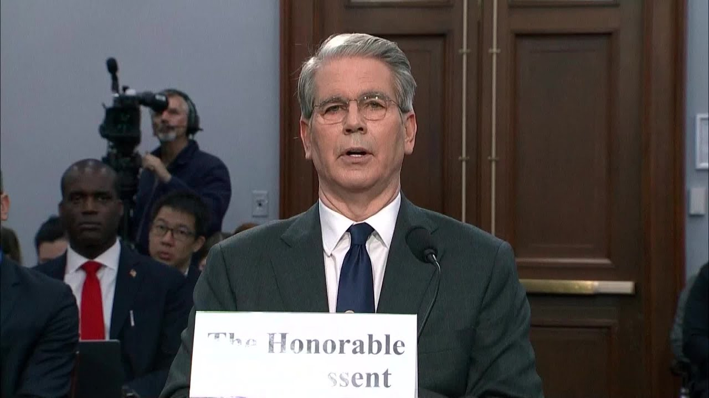

来B站一起耍【Global每日英语简报】
【贝森特称美国“目前尚未”与中国进行谈判】
Summary: The US is negotiating with 17 of its 18 major trading partners but has not yet engaged in talks with China, expecting reductions in tariffs, non-tariff barriers, currency manipulation, and subsidies, while trade, tax, and deregulation efforts progress.
摘要： 美国正在与其18个主要贸易伙伴中的17个进行谈判，但尚未与中国展开对话，预计将减少关税、非关税壁垒、货币操纵和补贴，同时贸易、税收和放松管制工作也在推进。

⏱️ Estimated Reading Time: 1 min
There are 18 very important trading relationships.
有18个非常重要的贸易关系。
We are currently negotiating with 17 of those trading partners.
我们目前正在与其中17个贸易伙伴进行谈判。
China, we have not engaged in negotiations with as of yet.
中国，我们目前尚未与其进行谈判。
So I expect that we can see a substantial reduction in the tariffs that we are being charged as well as non-tariff barriers, currency manipulation and the subsidies of both labor and capital investment.
因此，我预计我们将看到被征收的关税大幅减少，以及非关税壁垒、货币操纵和劳动力及资本投资的补贴减少。
So that is proceeding very well.
因此，进展非常顺利。
Many of our trading partners have approached us with very good offers and we are in the process of renegotiating those with the economy.
许多贸易伙伴向我们提出了非常好的提议，我们正在与经济重新谈判这些提议。
You know, I would say that this is a three legged stool trade tax and deregulation.
你知道，我认为这是一个三足鼎立的贸易、税收和放松管制。
Trade was first.
贸易是第一位的。
There is this house.
有这个议院。
According to Speaker Johnson, expects to move their portion of the bill over to the Senate on or about the Memorial Day.
据议长约翰逊称，预计将在阵亡将士纪念日前后将该法案的部分内容提交参议院。
So we're looking forward to that.
因此，我们期待这一点。
And then deregulation necessarily takes longer to affect the economy, but I would expect in the third and fourth quarters, we would see substantial benefits from deregulation that by this time last year could be in full force.
放松管制必然需要更长时间才能对经济产生影响，但我预计在第三和第四季度，我们将看到放松管制的实质性好处，而去年此时可能已全面生效。